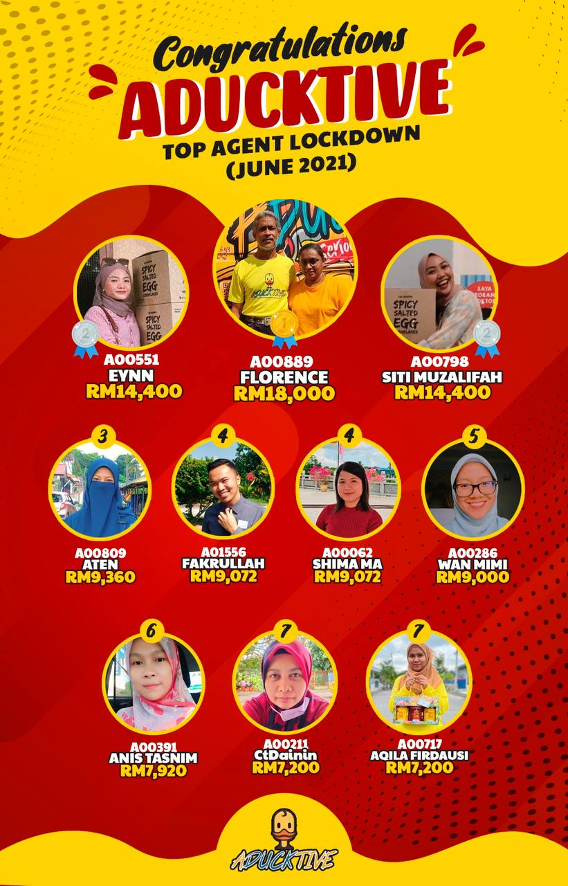
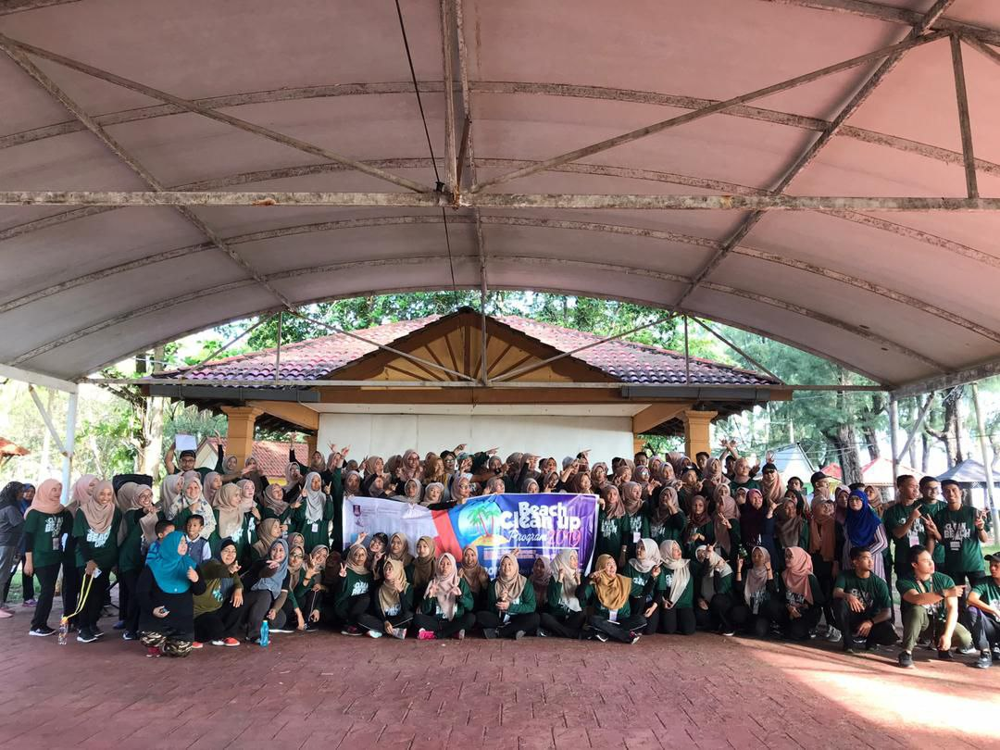

EXPERIENCE

TOP 5 AGENT JUNE
Starting my business after raya Aidilfitri this year in May. Alhamdulillah in June, I awarded as top 5 agent in Aducktive Salted Egg Cornflakes business. Never expected to get this award while I was busy with my student life. This is a very unforgettable experience in my life. Living both the student and part time business can be tough and put a lot of strain on my personal life. Then again, I can turn this strain into motivation and get great results.

DEPUTY PROJECT DIRECTOR OF CLEAN BEACH PROGRAMME
Rebuilt by Christopher Wren after the great Fire of 1666, St. Paul's has been the site of many historic state occasions. A busy working Christian community with several daily services at which all are welcome.
St Paul’s also welcomes visitors with access to five levels of the Cathedral including the Whispering Gallery with its unique acoustics and the Stone and Golden Galleries atop the Dome offering breathtaking panoramic views over London. Multimedia guides in eight languages for adults and children are included with sightseeing admission.